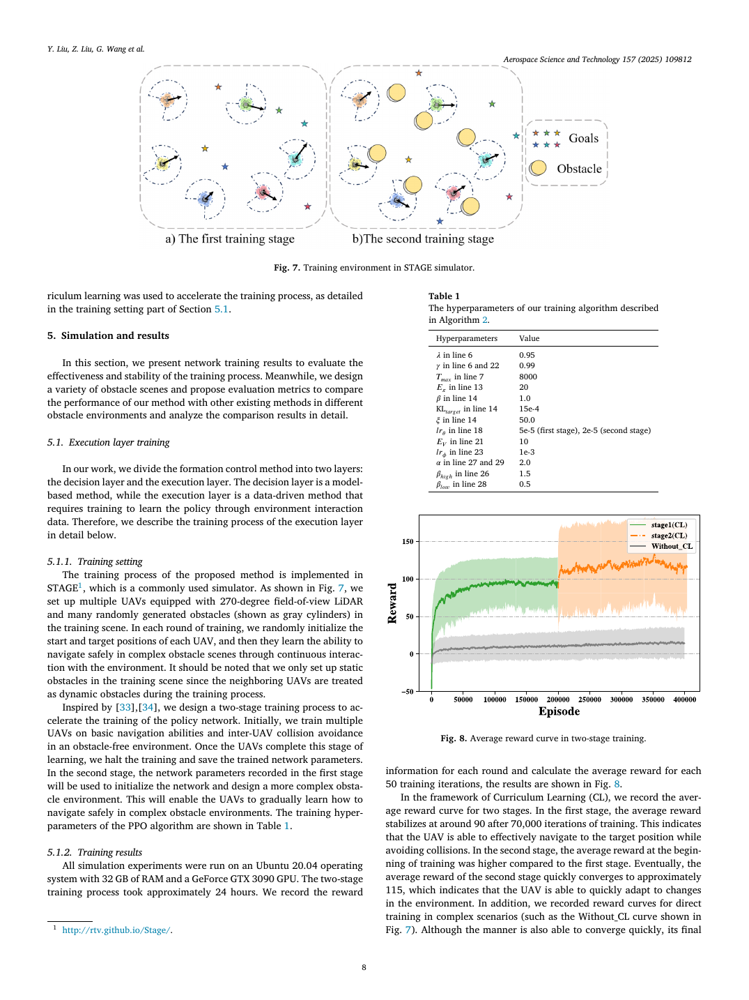

模型-数据混合驱动：仿射变换保"形"，DRL 保"命"——可伸缩、可剪切的多机柔性编队
| 作者 | Yunhao Liu（刘云浩，第一作者）、Zhihong Liu（刘志宏，通讯）、Guanzheng Wang（王冠政）、Chao Yan（闫超，南航）、Xiangke Wang（王祥科）、Zhiping Huang（黄志平） |
| 单位 | 国防科技大学 智能科学学院；南京航空航天大学 自动化学院（Chao Yan） |
| 期刊 | Aerospace Science and Technology 157 (2025) 109812；DOI: 10.1016/j.ast.2024.109812；2024-08-20 投稿 / 2024-12-01 接收 / 2024-12-05 在线（PDF 分类标签为 Review） |
| 一句话 | 把编队控制拆成两层：决策层用仿射变换（旋转/平移/缩放/剪切）解析地算出每个 follower 的时变目标点，保证编队"形不变、可伸缩"；执行层用 PPO 在 LiDAR 感知下学会"既不撞、又尽量保持编队"的速度指令。在 STAGE 仿真器中与 A-F / L-b / ORCA 三类 SOTA 对比，三种障碍场景均显著更优，并可扩展到更大编队。 |
同一篇论文在 Chao Yan 名下也有一份笔记：Chao Yan/2918（视角不同，可对照阅读）。
| 创新点 | 做法 | 解决什么 |
|---|---|---|
| ① 模型-数据混合两层架构 | 决策层：仿射变换 + 应力矩阵（解析）；执行层：PPO（学习） | 纯解析法在未知障碍下无法反应；纯 DRL 无法保证构型。分层让"保证"和"适应"各归其位 |
| ② 时变目标的解析计算 | $\mathbf{P}_f^*(t)=-\bar{\boldsymbol\Omega}_{ff}^{-1}\bar{\boldsymbol\Omega}_{fl}\mathbf{P}_l(t)$，follower 目标随 leader 实时更新 | 编队不再是"固定点集"，而是随环境伸缩的流形——这是"flexible"的数学含义 |
| ③ 两阶段课程学习训练 | 阶段 1：无障碍环境学基础导航 + 机间避碰；阶段 2：加载权重，换复杂障碍场景继续训 | 直接在复杂场景训练收敛慢且奖励低（论文给了 Without_CL 对照曲线）；课程把"学会飞"和"学会躲"分开 |
| ④ 与三类 SOTA 的统一对比 | A-F（纯解析仿射）、L-b（纯学习）、ORCA（反应式）＋ 本文 | 证明"混合"优于"任一纯方案"，而不只是优于弱基线 |
flowchart TB
subgraph DEC["决策层 · 模型驱动（解析）"]
AFF["仿射变换 (A(t), b(t))
旋转 / 平移 / 缩放 / 剪切"]
STR["应力矩阵 Ω̄ = Ω ⊗ I_d
分块：Ω̄ll, Ω̄lf, Ω̄fl, Ω̄ff"]
TGT["follower 时变目标
P*_f = −Ω̄ff⁻¹ Ω̄fl P_l"]
end
subgraph EXE["执行层 · 数据驱动（PPO）"]
OBS["观测：3×512 LiDAR(270°,5m)
+ 目标极坐标 + 上一步动作"]
NET["策略网络 π_θ / 价值网络 V_φ"]
ACT["动作 a = [v, ω]
v∈(0,1), ω∈(−1,1)"]
end
subgraph ENV["环境 · STAGE"]
UAV["多机 + 静态障碍
（灰色圆柱）"]
MET["评价：成功率 / 碰撞次数 / 编队误差 / 到达时间"]
end
AFF --> STR --> TGT --> OBS
OBS --> NET --> ACT --> UAV
UAV --> MET
UAV -->|"LiDAR 回波"| OBS
MET -.->|"奖励 r = rg + rc + rw + ra"| NET
classDef d fill:#e8f0fe,stroke:#3b82f6,color:#1d4ed8
classDef e fill:#f5f3ff,stroke:#8b5cf6,color:#6d28d9
classDef v fill:#fef7ed,stroke:#f59e0b,color:#92400e
class AFF,STR,TGT d
class OBS,NET,ACT e
class UAV,MET v
flowchart LR
N["标称构型 P*"] --> R["旋转
整体转向"]
N --> S["缩放
整体扩张/收缩"]
N --> H["剪切
斜向变形"]
R --> C["当前可行构型族"]
S --> C
H --> C
C --> Q{"障碍出现？"}
Q -->|"是"| SQ["沿可行方向变形
（如横向压缩通过窄缝）"]
Q -->|"否"| K["恢复标称构型"]
classDef n fill:#ecfdf5,stroke:#10b981,color:#047857
classDef q fill:#fef3c7,stroke:#f59e0b,color:#92400e
class N,R,S,H,C n
class Q,SQ,K q
这张图解释了"flexible formation"到底 flexible 在哪：不是放弃编队，而是在保序/保连通的前提下改变形状。穿越窄通道时横向压缩、绕过障碍时整体剪切——编队拓扑不变，几何可变。
| 要素 | 内容 |
|---|---|
| 观测 | $o^i_t=\{o^i_z,o^i_g,o^i_v\}$：$o^i_z\in\mathbb{R}^{3\times512}$（3 帧连续 2D 激光，视场 270°，量程 5 m，每帧 512 个距离值）；$o^i_g$ 目标相对位置（极坐标：距离 + 角度）；$o^i_v=[v^i_t,\omega^i_t]$ 当前动作反馈 |
| 动作 | $a^i_t=[v^i_t,\omega^i_t]$，$v\in(0,1)$、$\omega\in(-1,1)$（归一化速度级） |
| 奖励 | $r^i_t=r^i_g+r^i_c+r^i_w+r^i_a$：目标（到达 + 接近增量）、碰撞、角速度抑制（$|\omega|>0.7$ 才罚）、航向惩罚（防"锯齿路径过拟合"） |
| 场景 | STAGE 中三类：静态障碍（含已知棱柱 + 未知障碍）、动态障碍、不同规模编队；每方法每场景 50 次实验统计 |
| 基线 | A-F（仿射编队解析法，单轨控制率）、L-b（学习式编队，LiDAR 视场统一改为 270° 保证公平）、ORCA（反应式避碰 + 仿射，已做工程适配） |
| 阶段 | 场景 | 目标 | 论文给出的结果 |
|---|---|---|---|
| 阶段 1 | 无障碍 | 基础导航 + 机间避碰（把邻居 UAV 当作动态障碍） | 约 70,000 次迭代后平均奖励稳定在 ≈90 |
| 阶段 2 | 复杂障碍（随机生成灰色圆柱） | 在保持编队的同时避障 | 快速收敛到 ≈115（起点已高于阶段 1，说明迁移有效） |
| 对照 | 直接复杂场景训练（Without_CL） | — | 也能收敛，但最终奖励显著更低 |
| PPO 超参（Table 1，节选） | 取值 |
|---|---|
| $\gamma$ / $\lambda$（GAE） | 0.99 / 0.95 |
| 回合长度 $T_{max}$ / 训练轮数 $E_\pi$ | 8000 / 20 |
| KL 目标 / 熵系数 $\xi$ | 15e-4 / 50.0 |
| 学习率（策略 / 价值） | 5e-5（阶段 1）、2e-5（阶段 2）/ 1e-3 |
| 裁剪相关 $\alpha$ / $\beta_{high}$ / $\beta_{low}$ | 2.0 / 1.5 / 0.5 |
与 6201（JSBSim）和 6202（Stage + Gazebo 双栈）不同，这篇论文训练和实验都在 STAGE 里做，没有第二套仿真器。这是一个明确的取舍，值得单独分析。
| 理由 | 具体 |
|---|---|
| 任务本身是 2D 的 | 观测是 2D LiDAR（270°/5 m/512 点），动作是 $[v,\omega]$，运动学是单轨——问题定义里就没有 z 轴。用 3D 仿真器是纯浪费。 |
| 需要大量随机场景 | 三类障碍场景 × 50 次重复 × 多种编队规模，还要做课程学习的两阶段训练。STAGE 的 2D 射线投射 + 批量实例让这个实验矩阵在 24 小时内可完成。 |
| 与对比方法同域 | A-F、L-b、ORCA 都在同一 STAGE 场景里跑——这篇论文的对比是干净的同域对比（不像 6202 那边训练/验证跨域）。 |
| 可视化与调试 | STAGE 能直接输出 top-down 视图（Fig.7 就是），便于看编队形状变化，这对"柔性编队"这种几何性结论特别重要。 |
| 问题 | 说明 | 影响 |
|---|---|---|
| ① 无 3D / 无姿态 | 单轨运动学；编队的"剪切"只在平面内发生 | ★★★★★ 真实多旋翼的三维编队（高度分层、立体包围）无法验证 |
| ② 无 sim-to-real 与真机 | 论文结论止于 STAGE 仿真 | ★★★★ 同组 2021 年硕士论文（6206）有真机，这篇没有——反而退了一步 |
| ③ STAGE 的传感器是理想射线 | 5 m 量程、无噪声、无反射率；3 帧历史用于捕捉动态 | ★★★ 5 m 量程对 $v\le1$ m/s 够用，但对真实多旋翼（几 m/s）远远不够 |
| ④ 障碍只有圆柱 | 场景中障碍是随机生成的灰色圆柱（2D 即圆） | ★★ 对"复杂障碍"的宣称需要更多形状（墙、L 形、窄缝）支撑 |
| ⑤ 速度尺度偏小 | $v\in(0,1)$ 归一化速度，5 m LiDAR、0.1 m 到达半径 | ★★ 结论能否按比例放大到 5–10 m/s 的实用速度未验证 |

| 曲线 | 行为 | 说明什么 |
|---|---|---|
| stage1(CL) | 约 70,000 次迭代后稳定在 ≈90 | 无障碍下"会飞 + 不撞队友"已学会 |
| stage2(CL) | 从阶段 1 的终点继续，快速收敛到 ≈115 | 迁移有效：已有能力被复用，不是从零开始 |
| Without_CL | 收敛更快但最终值显著更低（明显低于 115） | 课程学习的价值不在"收敛快"，而在"收敛到更高性能"——这是一个容易被误读的点 |
| 工作 | 关系 |
|---|---|
| 6206 硕士论文（2021） | 提供"PX4 SITL + ROS + 真机"的工程底座与避碰策略 |
| 6202 UDR（2026） | 同一 Stage + PPO 栈；UDR 解决"看不见队友"，本篇解决"保持队形" |
| Chao Yan/2918 | 同一论文的另一份笔记视角 |